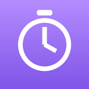

Stay with your lesson.
Other pages can wait.
Go back to the study page you chose.
--:--
left in your focus session
Focus Timer locks this Chrome profile only.
It cannot stop you opening another app or browser.

Other pages can wait.
Go back to the study page you chose.
left in your focus session
Focus Timer locks this Chrome profile only.
It cannot stop you opening another app or browser.